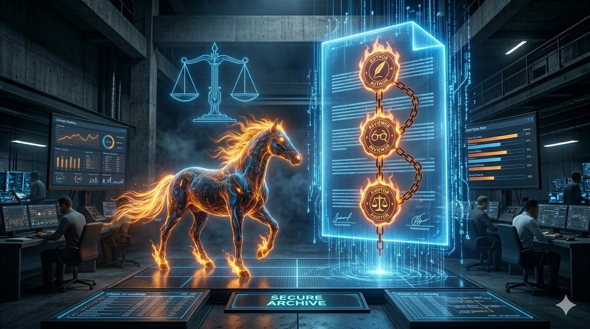

← Back to Store
Firehorse Signed Reports

Add legally binding eSignatures to any Firehorse report — court-defensible,
audit-ready.
Compliance reports, carbon assessments, and investor reports get DocuSign eSignature with
full tracking. Author, reviewer, and auditor sign in sequence. Signed PDFs are auto-archived
with a cryptographic audit trail.
€199 / year
Add-on — requires Firehorse Report
What's included
- DocuSign eSignature on all Firehorse reports
- Multi-party signing (author → reviewer → auditor)
- Signed PDF download and full audit trail
- Auto-archive of signed evidence
- Next step: add Firehorse Content Management → evidence vault
Two layers of signing: Transaction + KYA
Every Firehorse Signed Report carries two independent signatures — one from the humans who
approve the content, one from the AI agent that produced it.
Transaction signing (DocuSign)
Human signers apply a legally binding eSignature to the document. Identity verified at
signing time. eIDAS-compliant (AES / QES tiers), court-defensible.
- Author → reviewer → auditor in sequence
- DocuSign envelope + audit certificate
- Used for CSRD sign-off, investor packs, contracts
KYA signing (Know Your Agent)
The AI agent that produced the report cryptographically signs its own output — proving
which agent ran, under which capability manifest, at what trust score. Required for EU
AI Act Article 12 logging.
- Agent identity + capability manifest hash
- KYA trust score + Article 12 log reference
- Machine-provenance for every generated number
Why both? DocuSign proves who signed it. KYA proves
who produced it. Together you get human accountability and machine provenance on
the same PDF — the standard EU regulators will expect under the AI Act from 2026.
Why signed reports matter
-
CSRD & Fit for 55 require auditor-ready compliance evidence —
signatures on every report create a court-defensible trail.
-
Investor reporting benefits from verifiable author accountability and
tamper-proof signing.
-
Internal governance — multi-party signing enforces the
author/reviewer/auditor workflow without manual chase-ups.
How it works
- Generate any Firehorse Report (CSRD, carbon, investor pack).
- Route it through the signing chain: author → reviewer → auditor.
-
Each party signs via DocuSign. The signed PDF and audit trail are archived automatically.
-
Retrieve or verify at any time from the Firehorse dashboard — or pipe into Firehorse
Content Management for the evidence vault.
📅 Book Session